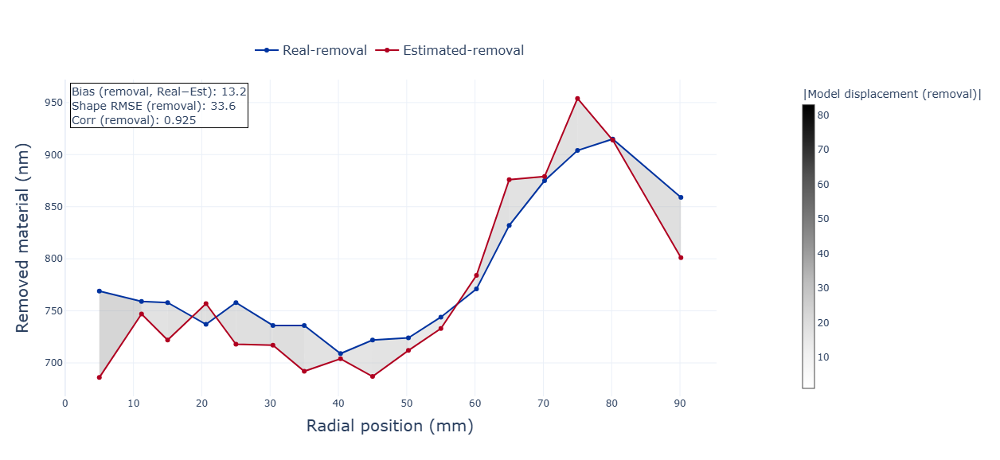

CMP Removal Modelling for Recipe Optimisation
Built a physics-guided model linking zoned pressures and spin-up behaviour to local material removal in a multi-zone CMP process, with the aim of supporting more systematic recipe development.
17 RADIAL POINTS · 4 PRESSURE ZONES · SLSQP

Incoming oxide topography meant that material could not simply be removed uniformly across the wafer. Recipe development therefore required control of the radial removal profile.
Developed the modelling workflow from experimental data handling and assumption testing through model fitting, constrained optimisation, visualisation and validation.
The model captured the main spatial relationship between pressure zones and local removal and predicted radial removal shape more reliably than absolute removal level.